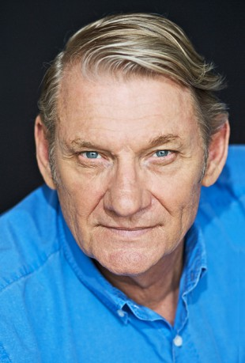

#7528 Exit - A Night from Hell
Alternativ: X: Night of Vengeance (Englischer Titel)

 IMDB-Wertung: 5.6 / 10
IMDB-Wertung: 5.6 / 10  Metascore: 0
Metascore: 0 
Edel-Call-Girl Holly hat ihren Ausstieg aus dem Geschäft bis ins kleinste Detail vorbereitet - die Koffer sind gepackt und der Flug nach Paris, wo sie ein neues Leben beginnen will, ist gebucht. Nur noch eine Nacht und ein letzter Job trennen sie vom Neuanfang. Doch diese Nacht entpuppt sich als größter Alptraum ihres Lebens: Gemeinsam mit der 17-jährigen Aussreißerin Shay, die wiederum zum ersten Mal in ihrem Leben ihren Körper verkauft, wird sie Zeugin eines brutalen Mordes. Der Killer nimmt die Fährte der beiden Frauen durch das nächtliche Sidney auf. Holly und Shay laufen um ihr Leben und erkennen bald, dass sie niemandem vertrauen können und auf eigene Faust einen Ausweg aus ihrer aussichtslosen Lage finden müssen …
Jahr: 2011
Dauer: 89 Minuten
FSK: 16
Land: Australien Studio: Senator Home EntertainmentTonspuren: DTS - ,
Untertitel:
Auflösung: 1080p (1920x1080) Größe: 5468 MB
Genre: Thriller, Drama, Krimi
Regisseur: Mark Cullen
Drehbuch: Belinda McClory
Soundtrack:
Darsteller:
- Viva Bianca als Holly Rowe
- Hanna Mangan Lawrence als Shay Ryan
- Eamon Farren als Harry
- Belinda McClory als Katherine / Marilyn
- Freya Tingley als Cindy
-  Anthony Phelan als Customer
- Wayne Blair als Bob
- Rowan Witt als Luke
- Richard Wolstencroft als Punter #1
- Peter Docker als Ligurian
- Stephen Phillips als Bennett
- Darren Moss als Giles
- Hazem Shammas als Willie
- Billie Rose Prichard als Rose
- Rebecca Irwin als Karlene
- Jordan Fielding als Rocky
- Joshua Payne als Stick
- Natasha Herbert als Shay's Mother
- Toby Zoates als Night Man
- Burnetta Hampson als Kelly
- David Peacock als Pensioner
- Muzzy als Muzzy
- Victoria Morgan als Woman #1
- Lee Coates als Woman #3
- Simonne Kranz als Woman #5
- Helen Lucas als Woman #6
- Raewyne Watson als Woman #7
- Lily Rolfe als Maid
- Giacomo Zanello als Waiter
- Ant Geeraert als Showgirls Customer #3
- George als Showgirls Spruiker
- Doug Griffiths als Crash Meathead #1
- John Halkett als Showgirls Customer #2
- Luke Hewitt als Showgirls Customer #1
- Jenni Huntington als Woman #4
- Mark Lazarus als Punter #2
- Scott Main als Crash Meathead #2
- Selda McDonald als Woman #2
- Beau Moloney als Crash Meathead #3
- Paul Redmond als Tattooed Man
- Jack Sargaent als Punter #4
- Sebastian als Love Machine Spruiker
- Benny Smith als Punter #3
- Sarah Smith als Showgirls Dancer #1
- Bain Wolfkind als Showgirls Customer #5
- Sam Worrad als Showgirls Customer #4
Datei: X:\2011(A-F)\Exit - A Night from Hell (2011, FSK16, 1920x1080).mkv seit 15.11.2017
Festplatte: HD 2010(G-Z)-2011(A-F)
 Es gibt insgesamt 86 Filme in der Gruppe '2011(A-F)'
Es gibt insgesamt 86 Filme in der Gruppe '2011(A-F)'